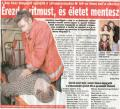
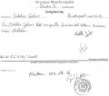
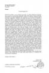

Siklósi Gábor
mentõápoló 2007 decemberében került a lapok címlapjára, amikor mentõautó híján saját robogójával
sietett egy riasztáshoz Péter Ferenc kollégájával, felszerelés nélkül megmentve egy kétéves kislány
életét. A nagyszerû hõstettet azóta is felemlegeti a bulvársajtó, s Siklósiból igazi sztár lett, az
életmentõ példakép, a mentõszolgálat büszkesége. Idõrõl idõre bulvárlapoknak nyilatkozik,
tévémûsorokban szerepel, elõadásokat tart. Egy televíziós szappanoperában is megjelent szereplõként.
2008-ban
Pannon Példakép Díjjal jutalmazták
önfeláldozó tevékenységéért, Péter Ferenccel közösen. 2007-es akciójuk nyomán hozták létre a
robogós
mentõszolgálatot, amelynek õ a csoportvezetõje. Siklósi Gábor saját elmondása szerint nem zsidó,
csak édesanyja és édesapja az.
De a lapok nem írtak soha arról, hogy Siklósi Gábor a
hétköznapi életben nem egészen az a feddhetetlen példakép, amit sugallnak róla. Legalábbis ezt
állítja Kincses Lajos mentõsofõr, akinek elmondása szerint 2008 októberében Siklósi Gábor gyógyszert
kevert az italába az Alkotás úti mentõállomás készenléti helyiségében, amitõl késõbb rosszul
lett.
- Furosemidet kevert az ásványvizembe - meséli felháborodottan a göndör hajáról
Bongyornak becézett sofõr - ami egy erõs vízhajtó. Ezzel viccelõdött. Pedig ez életveszélyes. A
Furosemide rajta van azon azon gyógyszerek listáján, amelyek fogyasztása után tilos szolgálatba
lépni. Ez az ártatlan vicc emberéletekbe kerülhetett volna. Hogy lehet egy mentõs ilyen
felelõtlen?
A Furosemide szívbetegség és ödéma kezelésére szolgál. Erõs vízhajtó hatása
mellett csökkenti a vérnyomást és felborítja a szervezet elektrolit-egyensúlyát, ezért lítiumot
szoktak adagolni hozzá. Ha ez elmarad, mint ahogy Kincses Lajos esetében, idegrendszeri
rendellenességek, tudatgyengülés léphet fel, a reakciók lelassulnak és a látómezõ is beszûkül. Errõl
bárki meggyõzõdhet, ha elolvassa a gyógyszer
betegtájékoztatóját. Itt
feketén-fehéren olvasható, hogy a gyógyszer alkalmazása alatt a jármûvezetés tilos.
- Nálam
pontosan ezek a tünetek jelentkeztek. Szédültem, alig láttam, beszûkült a látómezõm. Ráadásul aznap
túlóráztam. Jött egy riasztás, és épp akkor jött rám a vizelés, amikor a beteget raktuk be a
kocsiba. Most akkor képzelje el, hogy a családtagja rosszul van, fuldoklik, és a mentõ nem viszi el,
mert a sofõr tíz percen át vizel a kocsi mellett. Magyarázza meg nekik, hogy ez azért van, mert
Siklósi kolléga viccelõdött. Magyarázza meg, hogy ezért halt meg a nagymama. Szerencsére ez nem
történt meg, de nem sokon múlott. Este nagyon rosszul voltam, rengeteg vizet kellett
innom.
Egy ilyen viccért, gondolhatnánk, minimum kirúgják a humoros kollégát, de nem akkor,
ha a mentõk sztárjáról van szó. Kincses úr megdöbbenve tapasztalta, hogy a mentõállomás, sõt, az
Országos Mentõszolgálat vezetõsége is nemhogy szankcionálná, de egyenesen szemet huny Siklósi
tréfája fölött.
- Pedig
bizonyítani is tudom, hogy õ tette, nézze csak - tesz le elém egy papírlapot. - László Elõd, a
mentõállomás vezetõje másnap egy óra alatt kiderítette, ki tette ezt velem. Siklósi nem is tagadta,
fõnöke szemembe nevetett, és közölte, hogy ez csak ártatlan tréfa, "diákcsíny". Az állomásvezetõ
pedig figyelmeztetett engem, hogy "ne kívánjam Siklósi vérét", mert "megüthetem a bokámat." Én
azonban kértem, hogy egy szolgálati jegyre írják le, mi történt, mert ennek következménye lesz.
Másnap meg is kaptam ezt a jegyet, de mintha egy tízéves gyerek töltötte volna ki ákombákom
betûkkel, és nem volt rajta aláírás. Odavittem Siklósihoz, hogy írja alá, mire
aláírta.
Kincses Lajos hamarosan szembesült vele, hogy milyen nehéz egy hírességgel szemben
fellépni. Mint névtelen mentõsofõrt, meg sem hallgatták felettesei. Kollégái furcsán néztek rá,
amikor Siklósi felelõsségre vonását követelte. Mint kiderült, ez a furosemides tréfa nem egyedi
eset. Sokan részesültek ilyen ajándékban a "sztártól", évek óta bevett szokás egymás
"meghugyoztatása" a mentõknél.
- Ez így van - kommentálta az esetet szerzõtársunk,
Molnárgörény, aki maga is több évig mentõorvos volt. - Nincs ebben semmi különleges, évtizedek óta
szórakoznak ezzel a cégnél. Még senkinek nem lett ebbõl baja. A Furosemide ártalmatlan
gyógyszer.
Igen ám, de Kincses Lajos elmondása szerint a Szent János Kórház orvosai nem
osztották ezt a véleményt. Néhány nappal késõbb, amikor beteget szállítottak a kórház traumatológiai
osztályára, beszélt néhány orvossal, és valamennyien azt mondták, igaza van, ez valóban súlyos
dolog, nagy baj lehetett volna belõle. Megvizsgálni azonban már nem tudták, mert a gyógyszer néhány
nap alatt kiürül a szervezetbõl. Egybehangzó véleményük szerint öt ampulla Furosemide bevételébe
bele is lehet halni.
- Itt mindenki életeket ment, senki sem több a másiknál, de belõle külön
sztárt csináltak, és emiatt akármit megtehet. Szakmailag nem jobb, mint bármelyik másik kolléga. És
hibázni sem szokott kevesebbet. Csak errõl sem beszélnek. Õt is lopáson lehet kapni, mint sok más
mentõst - állítja Kincses Lajos. - Niczky Emõke újságírónak azt állította, hogy belsõ eljárás folyik
ellenem, amiért szolgálatban alkoholos befolyásoltság alatt álltam. Így próbált lejáratni. Egy szó
sem igaz ebbõl.
Tény, hogy Siklósi
ellen nem indult semmiféle eljárás, még csak a budai mentõállomásról sem helyezték át. Amikor
Kincses Lajos ezt kérte, értetlenül nézett rá mindenki. Levelet írt Dr. Göndöcs Zsigmondnak, az
Országos Mentõszolgálat fõigazgatójának, de soha nem kapott választ. Talán a fõigazgató sem lát
abban semmi kivetnivalót, hogy a mentõsök idõnként megmérgezik egymást. Kincses úrral azonban
különös dolgok történnek, amióta, úgymond, "nem értette a tréfát". Szolgálati beosztása véletlenül
mindig úgy jön ki, hogy ne jusson a jármûvére ápoló. Emiatt minden egyes alkalommal potyára megy be
a munkahelyére, nem szállhat ki riasztásokhoz. Többször ittas vezetéssel vádolták meg. Kincses
szerint egyértelmû, hogy Siklósit favorizáló kollégái összefogtak ellene, és megpróbálják
ellehetetleníteni a cégnél.
Kincses Lajos állítása szerint László Elõd, az állomásvezetõ
sokáig azt állította neki, hogy Siklósit fegyelmi eljárásban áthelyezték. Azonban egy hónappal
késõbb abból derült ki, hogy ez nem igaz, hogy Siklósi szekrénye továbbra is érintetlenül állt az
öltözõben.
- El akarta érni, hogy ne jelentsem fel Siklósit - kesereg Kincses - mert jogot
végzett emberként tudta, hogy csak harminc napom van rá, hogy magánvádas feljelentést tegyek.
Harminc napig hitegetett, hogy lesz eljárás, vagy már le is folyt, és mondogatta, hogy ne tegyek
semmit.
Késõbb László Elõdöt áthelyezték a budai mentõállomás élérõl, állítása szerint
Kincses "vádaskodása" miatt. Jelenleg az Országos Mentõszolgálat Módszertani Osztályán dolgozik, és
a légimentõkkel jár bevetésekre. Kincses Lajos öltözõszekrényét röviddel ezután egy ismeretlen
személy viperával törte össze szét a mentõállomáson, holmijait ellopta vagy szétdobálta. A tettes
természetesen sosem lett meg. Igaz, a viperát Bongyor úr látta néhány kollégája kezében, akikrõl azt
beszélik, hogy rendszeresen megverik a hajléktalanokat a mentõautóban.
A sajtó munkatársai
mereven elzárkóznak a történet közlésétõl, amint megtudják, kirõl szól a történet. Egyedül a
Budapest TV volt hajlandó szóba állni Bongyorral, ám az Indavideóra kitett adásrészletet szinte
azonnal törölték. Biztosan nem a Budapest TV kérésére történt, mert Valencsik Ferenc, a csatorna
igazgatója személyesen engedélyezte, hogy a videómegosztóra felkerüljön.
Megpróbáltuk
megkérdezni Siklósi Gábort, mit felelne ezekre a vádakra. Kiderült azonban, hogy nem olyan egyszerû
beszélni az önzetlen életmentõvel. Míg Kincses úr a telefonszáma után nyomozott mentõs kollégáit
felhívogatva, Siklósi maga jelentkezett, kérdõre vonva Kincsest, hogy miért kutat utána. Így
helyettem a két ellenérdekelt készített egymással spontán telefonos interjút, amit a Bombagyár Rádió
mikrofonja rögzített.
- Ampullák? Hol vallottam én azt be? - kérdezte flegmán a sztármentõs.
- Az az én írásom, én írtam le? Mit írtam alá? Én egy üres szolgálati jegyet aláírtam, igen,
emlékszem ilyenre.
- Üres szolgálati jegyet sosem ír alá senki - felelte Kincses. - A hátam
mögött meg mindenkinek meséled, hogy öt ampullával meghugyoztattad ezt a buzit!
- Én sosem
buzizok. És nem is tettem az italodba semmit. Nyugodtan fordulj újságírókhoz, menjél a tévéhez, ha
akarsz. De nekem van egy ügyvédem, ha bármi sérelem éri a személyiségi jogaimat, majd õ fog vele
foglalkozni. Vagy ha rasszista megjegyzéseket tesz valaki, mert ma már azt is büntetik!
- Mi a
rasszista szerinted?
- Nem foglalkozom ezzel. Összehozlak az ügyvédemmel, beszélgess vele. Vagy a
médiatanácsadómmal, mert az is van. Nagyon komoly szerzõdésem van néhány emberrel, akik mind ezzel
foglalkoznak, nekem ez az egész nem éri el az ingerküszöbömet.
- Ezért ütöd meg a pácienseket
bent a kocsiban?
- Én ilyenrõl sem tudok. Ha lesz a kezedben egy írásos fegyelmi határozat, hogy
én ezeket elkövettem, akkor nagyon szívesen leállok errõl bárkivel beszélgetni. De nincs. Egyébként
nagyon szívesen állok bármilyen újságíró rendelkezésére, de természetesen van egy gázsim, amit meg
kell fizetni.
Felhívtuk Siklósi Gábor személyi sajtófõnökét, Lukoczki Gábort, hogy mennyibe
kerülne a mentõápoló nyilatkozata. Lukoczki úr kissé meglepetten azt felelte, szó sincs ilyesmirõl,
Siklósi nem szokott pénzt kérni nyilakozatokért, ez valami félreértés lehet. Megadta Siklósi Gábor
személyes telefonszámát. A beszélgetés Siklósi úrral elég rövidre és különösre sikeredett.
-
Igaz, hogy Ön Furosemidet tett egy kollégája italába?
- Nem tudok errõl. Errõl éppen úgy nem
tudok beszélni, mint hogy tegnap hogy törtem el Miamiban a lábamat, mert az sem történt meg.
-
Elõfordul a mentõknél, hogy viccbõl gyógyszert raknak egymás ételébe, italába?
- Nem tudok erre
mit mondani.
- Nem tapasztalt még ilyet?
- Nem tudok erre mit mondani!
- Szokott aláírni
üres szolgálati jegyeket?
- Tessék?
- Szokott aláírni üres szolgálati jegyeket?
-
Halló!
- Üres szolgálati jegyeket szokott aláírni?
Hosszas hallgatás után:
- Uram!
Nem tudok ezzel kapcsolatban mit mondani. Nagyon szívesen beszélgetek Önnel bármilyen értelmes
témáról. Nemlétezõ dolgokról nem tudok beszélni.
- Ez egy létezõ téma. Írt-e Ön alá életében üres
szolgálati jegyet vagy sem?
- Viszonthallásra!
Miután Siklósi úr lecsapta a kagylót, pár
perc múlva számkijelzés nélkül hívott valaki. Felvettem, mire azonnal letette. Biztosan véletlenül.
Ezután Siklósi úr visszahívott, megkérdezte, honnan kerestem, majd miután gondosan felírta, hogy
"Bombagyár Rádió", elköszönt és letette.